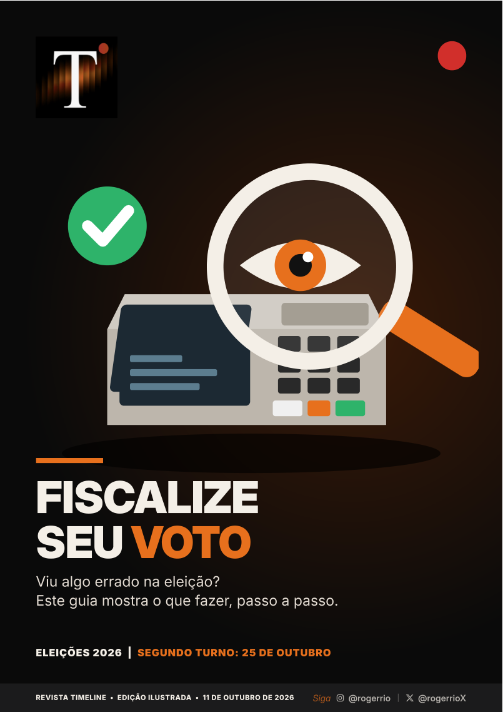
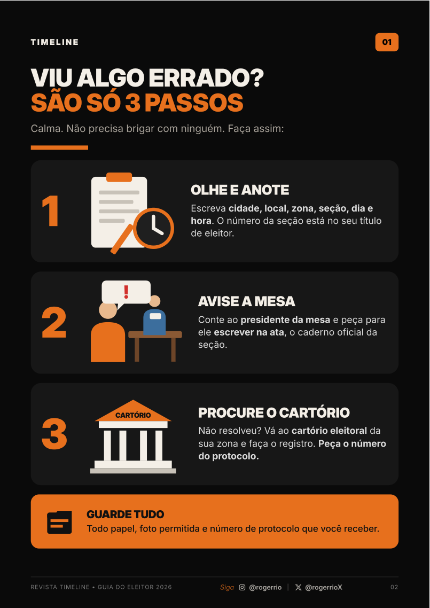
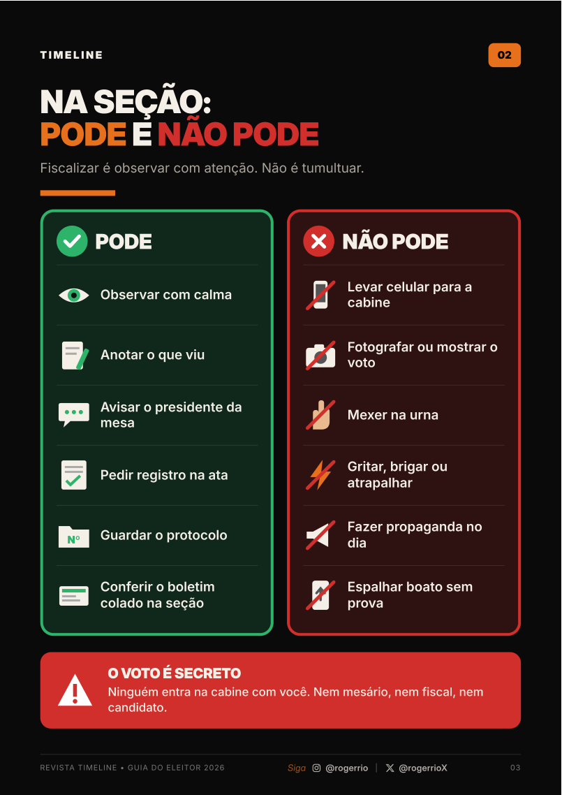
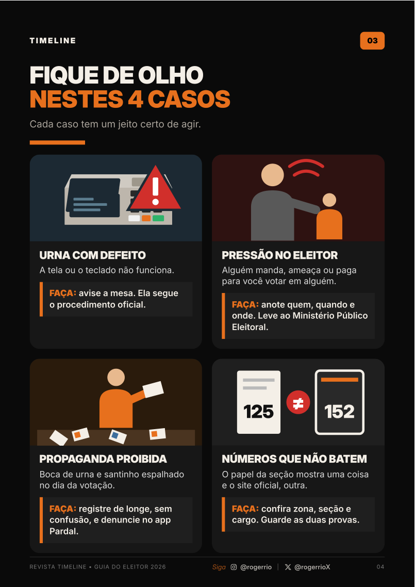
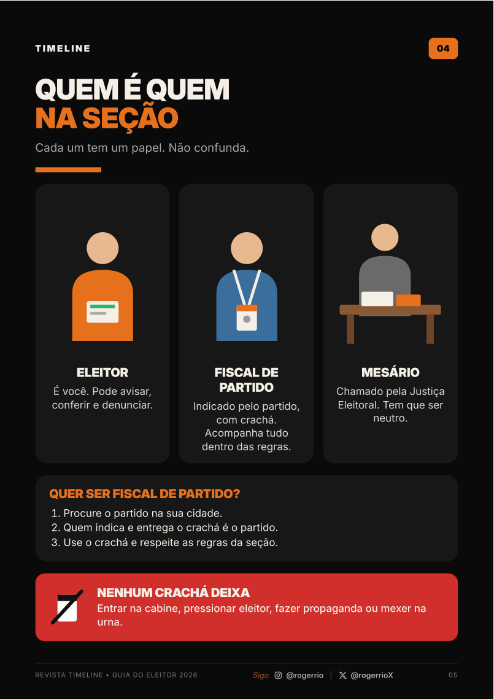
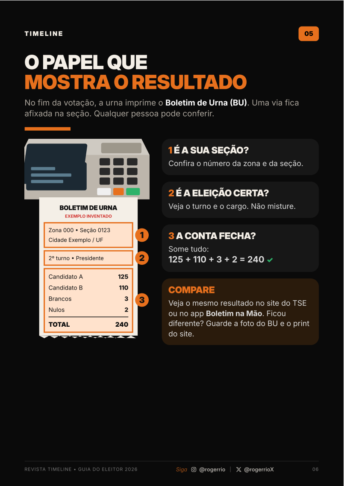
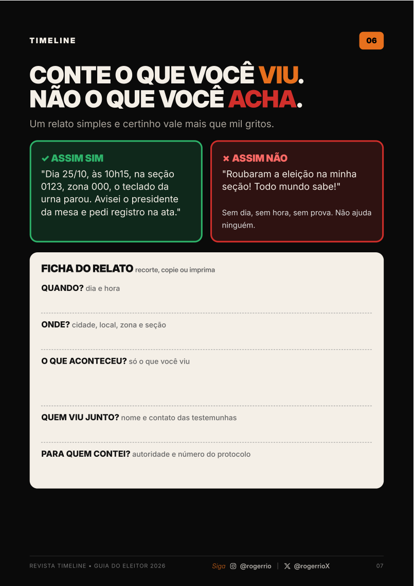
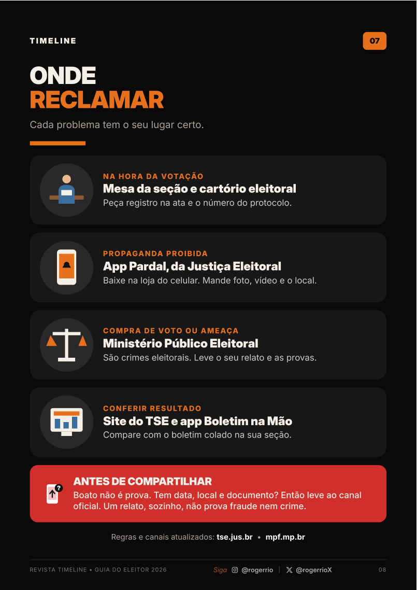

Guia Fiscalize Seu Voto

01 · Viu algo errado? São só três passos

02 · Na seção: pode e não pode

03 · Fique de olho nestes quatro casos

04 · Quem é quem na seção

05 · O papel que mostra o resultado

06 · Conte o que você viu, não o que você acha

07 · Onde reclamar

Consulte também os canais oficiais: TSE e Ministério Público Federal.